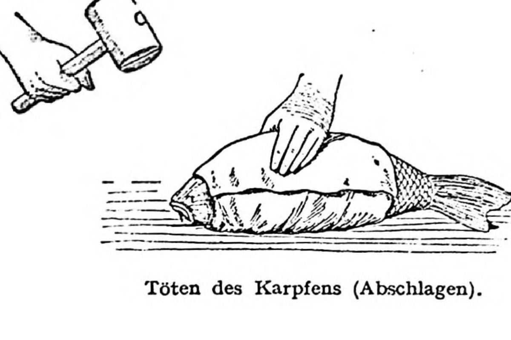

Gekochter Karpfen

Beschreibung
Carpe cuite. (1 Stunde, 1 Port. = 232 [87] Kal. = 348 Nem.)
Zutaten
- Karpfen 2 kg
- Sud:
- Salzwasser
- Petersilienwurzel ½ (10 dkg)
- Gelbe Rübe ½ (10 dkg)
- Selleriewurzel (Zeller) ¼ (5 dkg)
- Zwiebel ½ (6dkg) und Essig
- Pfeffer- 30 und Gewürzkörner 10
- Thymian und Lorbeerblatt 1
- Butter 15 dkg
Zubereitung
- Der Fisch wird abgeschuppt und ausgenommen.
- Hernach bindet man den Fisch an den Einsatz einer Fischwanne fest. Damit er besser hält, spreizt man den Bauch mit einem kurzen Holzscheit aus.
- Man übergießt den Fisch mit einem kochenden Sud aus Wasser, Essig, sehr viel Salz, blättrig geschnittenem Wurzelwerk, Zwiebeln, Pfeffer- und Gewürzkörnern, Thymian und Lorbeerblatt und läßt ihn zugedeckt auf dem Herdrand ½ Stunde ziehen.
- Der angerichtete Fisch wird mit zerlassener Butter übergossen oder mit Sauce hollandaise serviert.
Beigabe: Kipflerkartoffeln, Salzkartoffeln
Aus: Olga Hess u. Adolf Hess: Wiener Küche (Wien: Deuticke, 1950)